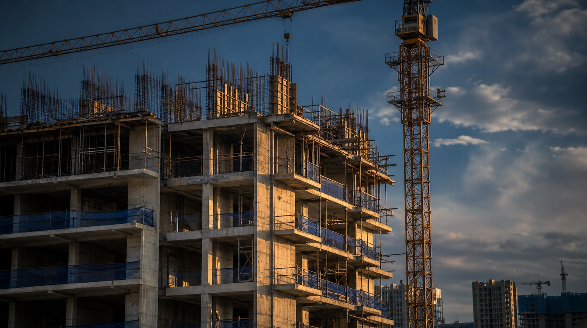
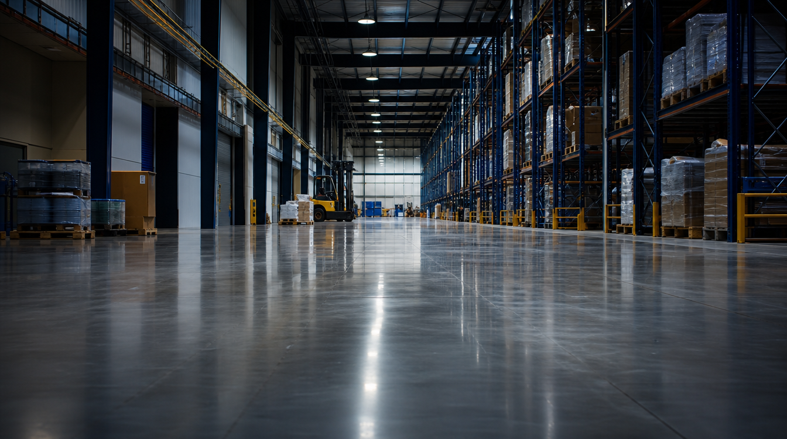
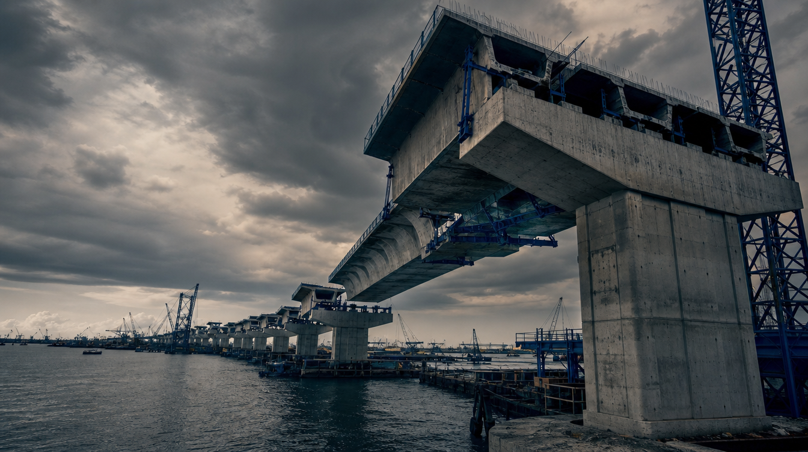
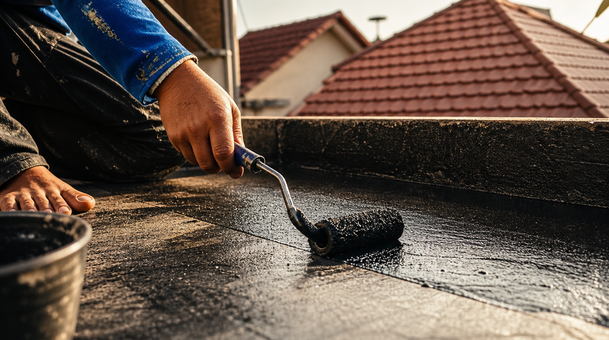
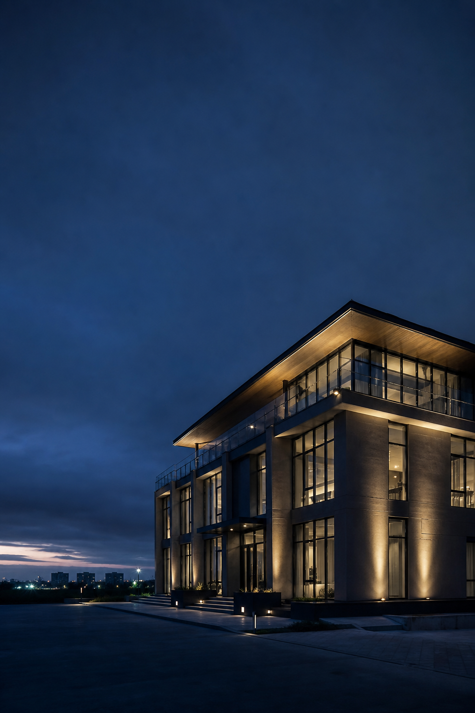

01 · High-Rise / Residensial
Apartemen, Kondominium & Gedung Bertingkat

▣
assets/spec-sheet/highrise.png
1600 × 900 px · 16:9
Foto: apartemen / gedung bertingkat dalam konstruksi
Tantangan Utama
Beton struktural mutu tinggi dengan penulangan rapat, siklus cetakan cepat dibongkar, pelat luas (roof deck), basement, dan kamar mandi di tiap unit — semua beton bertulang/pratekan wajib bebas klorin.
| Tahap / Kebutuhan | Produk YK | Dosis / Konsumsi | Catatan |
|---|
| Pengecoran struktur (kolom, pelat, dinding, core wall) | YK NN® | 0,30–2,30% berat semen | −20% air → +40% kuat tekan (28 hari), kuat ≥12 jam, bebas klorin |
| Pelepasan cetakan | YK Mould Oil® | 1 L → 20–25 m² (plywood) | Permukaan halus, cocok untuk steam curing |
| Perawatan beton (roof deck, pelat luas) | YK Curing® | 0,15–0,20 kg/m² | Kurangi retak plastis & debu di permukaan luas |
| Pondasi mesin lift/genset, angkur | YK Grout® | ±1.920 kg/m³ · tebal 20–50 mm | Non-shrink, CRD C-621 & ASTM C-1107 |
| Waterproofing atap / roof deck | YK Water Proofing® | 0,3–0,35 kg/m² per lapis | Tahan UV & cuaca, sangat lentur |
| Waterproofing basement & kamar mandi tiap unit | YK Water Proofing® | 0,3–0,35 kg/m² per lapis (2 lapis) | Lapisan kedap air, lentur, menutup pori beton |
| Sambungan beton lama–baru / perbaikan struktur | YK Bond® | Campur air 1:1 s.d. 1:3 | Daya rekat tinggi, kurangi retak rambut |
Dosis indikatif — verifikasi via site visit & mix design. Klik nama produk (bergaris bawah ↗) untuk buka TDS.
02 · Pabrik / Industri
Gudang, Pabrik, Logistik & Parkiran

▣
assets/spec-sheet/pabrik.png
1600 × 900 px · 16:9
Foto: lantai pabrik/gudang heavy-duty / aplikasi floor hardener
Tantangan Utama
Lantai beban berat / heavy traffic yang harus tahan abrasi dan minyak, pondasi mesin presisi, serta area lantai yang sangat luas.
| Tahap / Kebutuhan | Produk YK | Dosis / Konsumsi | Catatan |
|---|
| Lantai & beton struktural | YK NN® | 0,30–2,30% berat semen | Kuat tekan tinggi, kurangi getaran tanpa perlambatan setting |
| Pengerasan lantai (heavy traffic) | YK Floor Hardener® | 3 / 4–5 / 6 kg/m² (ringan/sedang/berat) | Tahan abrasi & oli, 6 warna, lapisan perkuatan 2–3 mm |
| Perawatan lantai | YK Curing® | 0,15–0,20 kg/m² | Kurangi retak plastis & debu; hemat tenaga vs siram manual |
| Pondasi / dasar mesin, angkur | YK Grout® | ±1.920 kg/m³ · tebal 20–50 mm | Non-shrink, tahan benturan & getaran; CRD C-621 & ASTM C-1107 |
| Pelepasan cetakan (elemen precast) | YK Mould Oil® | 1 L → ±40 m² (cetakan logam) | Permukaan halus, hemat, cocok produksi precast |
| Waterproofing atap pabrik | YK Water Proofing® | 0,3–0,35 kg/m² per lapis | Tahan UV, tanpa primer |
Dosis indikatif — verifikasi via site visit & mix design. Klik nama produk (bergaris bawah ↗) untuk buka TDS.
03 · Infrastruktur
Jembatan, Jalan, Dermaga & Pelabuhan

▣
assets/spec-sheet/infrastruktur.png
1600 × 900 px · 16:9
Foto: jembatan / dermaga / jalan beton / struktur marine
Tantangan Utama
Beton mutu tinggi tahan lingkungan agresif (marine, pasang surut, sulfat), grouting presisi untuk bearing & angkur, perawatan permukaan luas, dan perbaikan struktur eksisting.
| Tahap / Kebutuhan | Produk YK | Dosis / Konsumsi | Catatan |
|---|
| Beton struktur (pier, pelat jembatan, pratekan) | YK NN® | 0,30–2,30% berat semen | Bebas klorin — krusial untuk struktur pratekan & lingkungan laut |
| Pelepasan cetakan (girder / elemen precast) | YK Mould Oil® | 1 L → ±40 m² (cetakan logam) | Permukaan halus, cocok produksi precast skala besar |
| Perawatan beton (jalan, apron, taxiway, balok pratekan, dermaga) | YK Curing® | 0,15–0,20 kg/m² | Untuk permukaan luas berlalu-lintas; tidak mudah terbakar |
| Grouting bearing pad, angkur, area pasang surut | YK Grout® | ±1.920 kg/m³ · tebal 20–50 mm | CRD C-621 & ASTM C-1107; tahan getaran & struktur kelautan |
| Perbaikan beton (dinding pelabuhan, tiang jetty) | YK Bond® | Campur air 1:1 s.d. 1:3 | Bonding beton lama–baru untuk patching / rendering |
Dosis indikatif — verifikasi via site visit & mix design. Klik nama produk (bergaris bawah ↗) untuk buka TDS.
04 · Hunian / Renovasi
Rumah Tinggal, Ruko & Perbaikan

▣
assets/spec-sheet/hunian.png
1600 × 900 px · 16:9
Foto: renovasi rumah / waterproofing atap / pasang keramik
Tantangan Utama
Masalah sehari-hari — atap bocor, kamar mandi rembes, keramik lepas, plester retak. Butuh produk siap pakai, panduan simpel, dan fitur hemat biaya seperti on-tile (tanpa bongkar keramik lama).
| Tahap / Kebutuhan | Produk YK | Dosis / Konsumsi | Catatan |
|---|
| Waterproofing atap / dak | YK Water Proofing® | 0,3–0,35 kg/m² per lapis | Tahan UV, sangat lentur; bisa dikombinasi membran polyester |
| Kamar mandi, toilet, balkon | YK Water Proofing® | 0,3–0,35 kg/m² per lapis (2 lapis) | Anti bocor, menutup pori, aplikasi 2 lapis |
| Bocor seketika (basement, talang, tekanan tinggi) | YK Accelerator® | Waterplug 1:2–1:5 dengan air | Setting sangat cepat, kekuatan awal tinggi |
| Plester dinding & pasang bata | YK Plaster Mix® | 3,8–4,0 L air per bag 25 kg | Fungsi ganda, cegah retak rambut, tinggal tambah air |
| Bonding beton lama–baru / primer / patching | YK Bond® | Campur air 1:1 s.d. 1:3 | "Hero product" renovasi — atasi plester retak & lapisan lepas |
| Pasang keramik / marmer / granit (incl. on-tile) | YK Tile Adhesive® | ±6–7 m² per 25 kg (2 mm) · 6,25 L air/25 kg | Bisa pasang di atas keramik lama → hemat biaya bongkar |
Dosis indikatif — verifikasi via site visit & mix design. Klik nama produk (bergaris bawah ↗) untuk buka TDS.

▣
assets/spec-sheet/penutup.png
210 × 297 mm · full-bleed (portrait)
Foto: hasil proyek selesai / gedung jadi / handshake (gelap-dramatis)

Cara Memulai
Bangun Sekali, Kuat Selamanya.
Hubungi tim sales kami untuk quotation, sample produk, atau jadwalkan site visit aplikator senior. Konsultasi mix design tanpa biaya.
01
Konsultasi GratisSampaikan volume, timeline, & jenis struktur via form, WA, atau telepon.02
Site Visit AplikatorKonsultasi mix design & sample uji untuk proyek besar.03
Quotation & POPenawaran resmi: harga, termin, & jadwal pengiriman.04
Pengiriman + SupportTechnical support di lapangan & garansi hasil sesuai TDS.